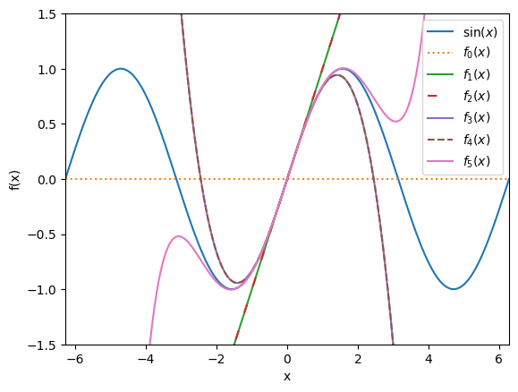
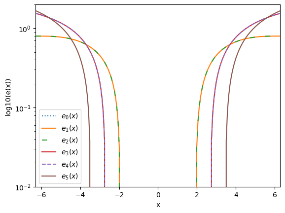
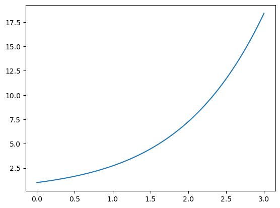

Contents
import numpy as np
n = 200 # Gives smoother functions than standard n=50 linspace
x = np.linspace(-2*np.pi,2*np.pi,n)
a_0 = 0
a = a_0*np.ones(len(x)) # Lower
def f(x):
return np.sin(x)
def f0(x):
return np.sin(a)
def f1(x):
return f0(x) + (x-a)*np.cos(a)
def f2(x):
return f1(x) - (x-a)**2/2 * np.sin(a)
def f3(x):
return f2(x) - (x-a)**3/6 * np.cos(a)
def f4(x):
return f3(x) + (x-a)**4/24 * np.sin(a)
def f5(x):
return f4(x) + (x-a)**5/120 * np.cos(a)
import matplotlib.pyplot as plt
%matplotlib inline
plt.plot(x,f(x),label="$\sin(x)$")
plt.plot(x,f0(x),label="$f_0(x)$",ls=":")
plt.plot(x,f1(x),label="$f_1(x)$")
plt.plot(x,f2(x),label="$f_2(x)$",ls=(0, (5, 10)))
plt.plot(x,f3(x),label="$f_3(x)$")
plt.plot(x,f4(x),label="$f_4(x)$",ls="dashed")
plt.plot(x,f5(x),label="$f_5(x)$")
plt.xlabel("x")
plt.ylabel("f(x)"),
plt.xlim((-2*np.pi,2*np.pi))
plt.ylim((-1.5,1.5))
plt.legend()
plt.savefig("../../images/Module1/TaylorSeries/1_2.png");

e0 = abs(f(x)-f0(x))
e1 = abs(f(x)-f1(x))
e2 = abs(f(x)-f2(x))
e3 = abs(f(x)-f3(x))
e4 = abs(f(x)-f4(x))
e5 = abs(f(x)-f5(x))
plt.plot(x,np.log10(e0),label="$e_0(x)$",ls=":")
plt.plot(x,np.log10(e1),label="$e_1(x)$")
plt.plot(x,np.log10(e2),label="$e_2(x)$",ls=(0, (5, 10)))
plt.plot(x,np.log10(e3),label="$e_3(x)$")
plt.plot(x,np.log10(e4),label="$e_4(x)$",ls="dashed")
plt.plot(x,np.log10(e5),label="$e_5(x)$")
plt.xlabel("x")
plt.ylabel("log10(e(x))")
plt.xlim((-2*np.pi,2*np.pi))
plt.ylim((10**(-2), 2))
plt.yscale("log")
plt.legend();
plt.savefig("../../images/Module1/TaylorSeries/1_3.png")

import sympy as sy
from sympy.utilities.lambdify import lambdify
x = sy.Symbol('x')
exp_expr = sy.exp(x).series(x).removeO()
exp_func = lambdify(x, exp_expr)
x_points = np.linspace(0.0, 3.0, 100)
plt.plot(x_points, [exp_func(i) for i in x_points]);
